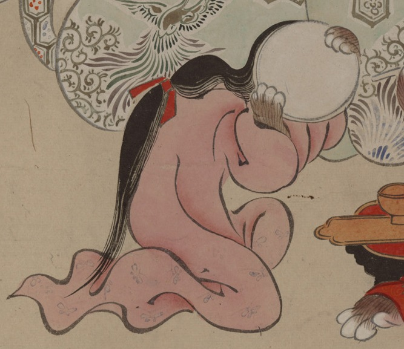

鏡を持つ女官の化物。桃色の着物を身にまとい、鏡で顔を隠すようにしている。鏡を持つ両手は獣のものである。
出典：親書誌：U426_nichibunken_0154：妖怪絵巻；ヨウカイエマキ／日付：2010／資源識別子：U426_nichibunken_0154_0029_0000
Copyright (c)2010- International Research Center for Japanese Studies, Kyoto, Japan. All rights reserved.